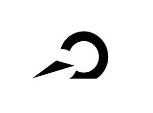

Trade Mark Journal No.2026/006 6 February 2026
UK00004326747 20 January 2026 (7,9,28)

- Class 7
- Alternating current servo motors; Bicycle dynamos; Control mechanisms for machines, engines or motors; Control mechanisms for robotic machines; Differential gear mechanisms for machines; Gear assemblies, other than for land vehicles; Gear units for power transmissions, other than for land vehicles; Hand-held tools, other than hand-operated; Housings [parts of machines]; Industrial robots; Machine coupling and transmission components, except for land vehicles, and parts therefor; Metalworking machines; Motors, electric, other than for land vehicles; Robotic exoskeleton suits, other than for medical purposes; Robotic handling apparatus; Transmission control mechanisms; Transmission gears for machines; Power transmission couplings [other than for land vehicles]; Robotic arms for industrial purposes; Speed governers [mechanical] for machines, engines and motors.
- Class 9
- Batteries; Battery chargers; Electronic controllers for servo motors; Electronic game software for mobile phones; Humanoid robots with artificial intelligence for use in scientific research; Knee-pads for workers; Laboratory robots; Monitoring apparatus, other than for medical purposes; Odometers; Personal digital assistants [PDA]; Recorded computer operating programs; Smart glasses; Smartphone software applications, downloadable; Smartwatches; Teaching robots; User-programmable humanoid robots, not configured.
- Class 28
- Aerobic step machines; Apparatus for achieving physical fitness [for non-medical use]; Ascenders [mountaineering equipment]; Body-building apparatus [exercise]; Climbing units [playground equipment]; Controllers for toys; Electronic educational game machines for children; Knee guards [sports articles]; Knee pads for athletic use; Leg weights for exercising; Protective paddings [parts of sports suits]; Smart robot toys; Machines for physical exercises; Sports equipment; Toy robots.
Xeno Dynamics Co., Ltd
Representative: yayipcom